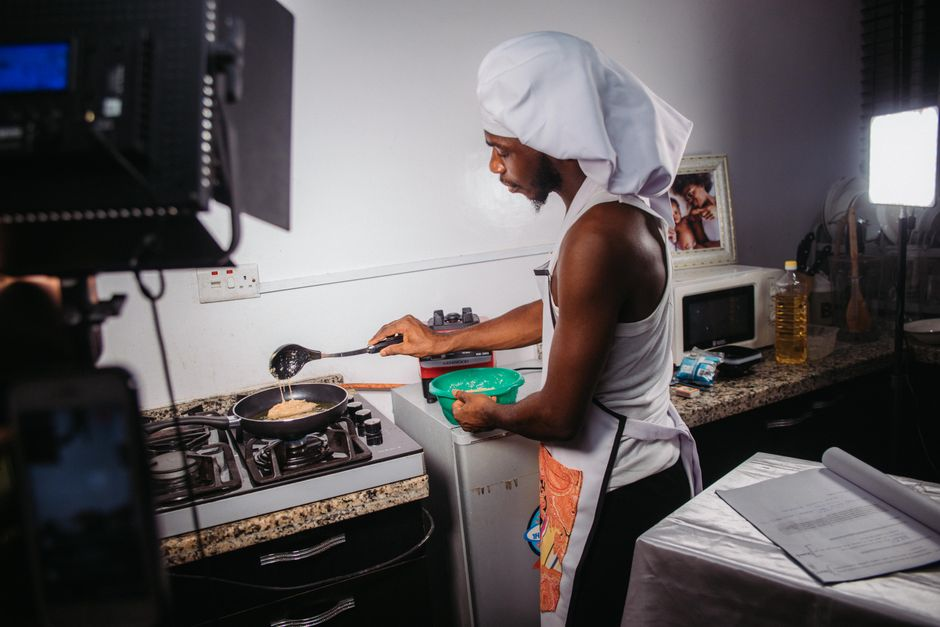

キッチン
一人暮らしの食費を抑える買い物の工夫と冷凍保存のコツ
2026-10-30

一人暮らしを始めると、毎月の食費がどれくらいかかっているのか気になる方も多いのではないでしょうか。平均的な金額を知ったうえで、買い物の仕方や保存方法を少し工夫するだけでも、食費を抑えやすくなります。この記事では、まとめ買いや冷凍保存を中心に、続けやすい工夫を紹介します。
一人暮らしの食費はどれくらい?まず平均を知る
一人暮らしの食費は、調査によって幅はあるものの、34歳以下の男性で月平均42,747円、女性で33,157円という数字が紹介されています。また、総務省統計局のデータを基にした別の調査では平均44,659円とされているものもあります。一方で、自炊を中心にした生活では月15,000〜25,000円程度に抑えられるケースもあると紹介されており、外食や中食の割合を減らすことが金額の差につながっているようです。まずはこうした平均額を目安にしながら、自分の食費がどのあたりにあるのかを把握しておくと、節約の目標を立てやすくなります。数字を見える化することが、買い物や保存の工夫を続けるモチベーションにもつながります。
まとめ買いは週1回・リスト化が基本
食費節約の基本として紹介されているのが、週1回のまとめ買いです。何度もスーパーに立ち寄ると、その都度ちょっとした物を買ってしまい、気づかないうちに食費がかさんでしまいます。買い物に行く前に、1週間分のざっくりとした献立を考え、必要な食材をリストアップしておくと、リストにないものは基本的に買わないという判断がしやすくなります。セール品や値引き品に目を引かれても、リストにない場合は一度立ち止まって本当に必要かを考えることが、無駄買いを減らすポイントとして紹介されています。買い物の回数自体を減らすことも、節約につながる工夫のひとつです。
冷蔵庫・冷凍庫の「あるものメモ」で買い過ぎを防ぐ
買い物に出る前に、冷蔵庫や冷凍庫の中身を確認して「あるものメモ」を作っておく方法も紹介されています。これを見ながら買い物をすることで、すでに家にある食材を知らずに重ねて買ってしまうことを防ぎやすくなります。一人暮らしだと冷蔵庫の中身を把握しきれず、同じような食材を買ってしまったり、気づかないまま賞味期限を過ぎてしまったりすることも起こりやすいものです。メモはスマートフォンのメモ機能や、冷蔵庫に貼った紙など、自分が続けやすい方法で構いません。在庫を把握する習慣をつけることが、食品ロスと無駄な出費の両方を減らす工夫になります。
肉・魚・ご飯・野菜の冷凍保存のコツ
まとめ買いした食材は、買ったあとすぐに「使う分」と「保存する分」に分けておくことがポイントとして紹介されています。肉や魚は1回分ずつ小分けにしてラップに包み、冷凍用保存袋に入れて平らにし、急速冷凍すると2〜4週間ほど保存できるとされています。ご飯は1食分ずつラップで包んで冷凍すると1〜2ヶ月ほど保存でき、野菜やきのこ類も使いやすい大きさに切ってから冷凍しておくと調理の手間を減らせます。保存袋には冷凍した日付を記入しておくと、古いものから順に使う習慣がつきやすく、食材を使い忘れて無駄にしてしまうことの防止にもつながります。
作り置きを小分け冷凍して自炊を続けやすくする
野菜スープやドライカレー、豚の生姜焼きなどをまとめて作り、1食分ずつ小分けにして冷凍しておく方法も紹介されています。あらかじめ数品を作り置きしておけば、忙しい日でも温めるだけで食事を用意できるため、外食や中食に頼る回数を減らしやすくなります。自炊と外食のバランスについては、自炊7割・外食3割程度が続けやすいという考え方も紹介されており、1食を外食から自炊に置き換えるだけでも食費の差が出やすいとされています。無理に全てを自炊にしようとせず、作り置きと冷凍保存を組み合わせて、続けられる範囲で自炊の割合を増やしていくことが大切です。
食費を抑えるうえでは、週1回のまとめ買いとリスト化、冷蔵庫の在庫確認、そして肉・魚・ご飯などの冷凍保存を組み合わせることが、無理なく続けやすい工夫として紹介されています。まずは一つずつ、自分の生活に取り入れやすい方法から試してみてはいかがでしょうか。


読み込み中...